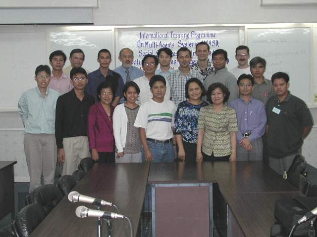

MAS in the field of computer sciences
22-26 April 2002
Multi-Agent Systems (MAS),
Social Sciences and
Integrated Natural Resource Management (INRM)
Trainer
Dr. A.Drogoul, University of Paris 6, France
Report on the training is availableOrganizers
- Dr. S. Jesdapipat ( University of Chulalongkorn Bangkok, Center of Ecological Economics)
- F. Bousquet (CIRAD-IRRI)

Course Objectives
To improve the level of understanding and mastering on MAS methodology and its application in simulation. Applications to collective robotics and collective intelligence.
Training
| Day | 8h30-10h | 10h30-12h | 13h30-15h | 15h30-17h |
| Monday 22 | Opening Ceremony |
Introduction to Multi-Agent Systems
|
||
| Introduction to MAS | Introduction to NetLogo | Introduction to MAS | ||
|
Tuesday 23 |
Simulation
|
Simulation
|
||
| Application to simulation |
Examples of simple simulations on NetLogo |
Key problematics of multi-agent simulation | Design and implementation of a simple social simulation
in NetLogo |
|
| Wednesday 24 |
Problem solving
|
|||
| Multi-agent collective problem solving | Demonstration and exercises | Group work, presentation of on-going project | Group work, presentation of on-going project | |
|
Thursday 25 |
Agent Architectures / Incremental design |
Design and implementation of the collective sorting
problem in NetLogo |
Social robots / Collective robotics | Group work, presentation of on-going project |
| Friday 26 | Multi-agent learning methods | Presentation of on-going projects | Presentation of on-going projects | Closing ceremony |